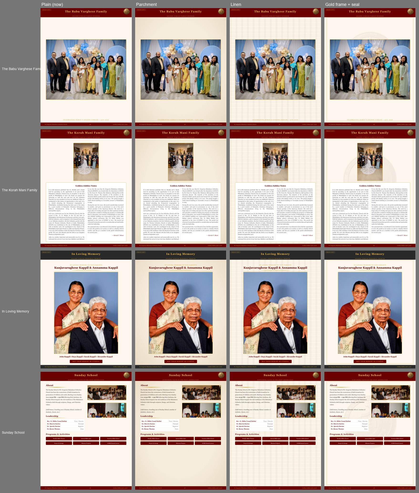
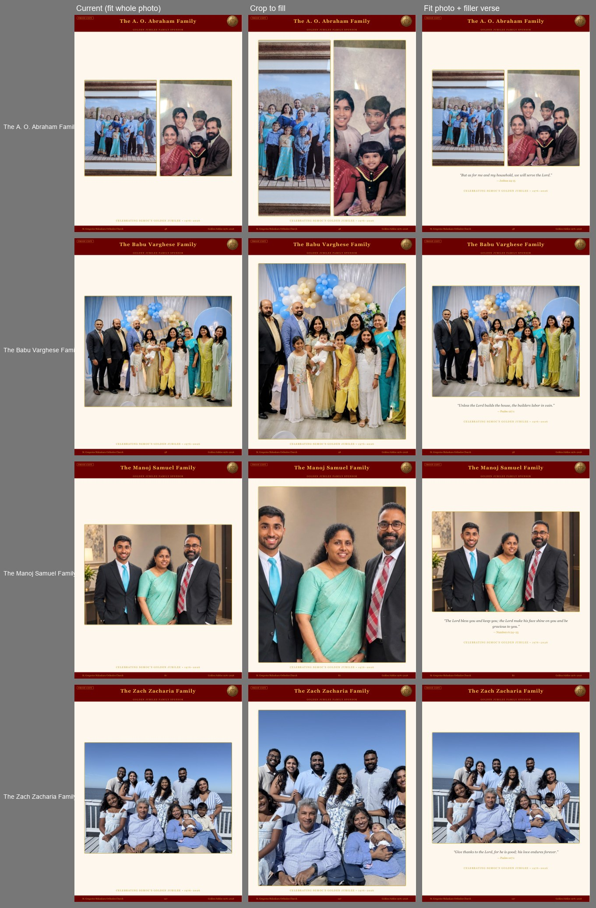
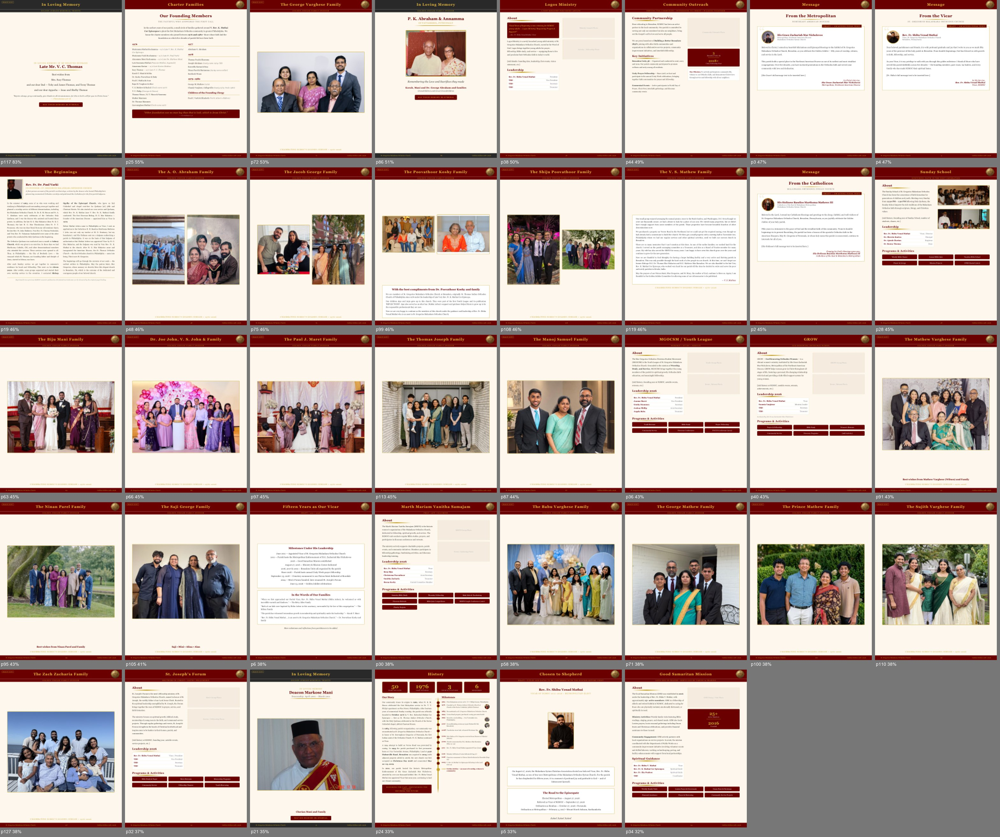

Editorial Board · 15 September 2026
Three decisions to settle on tonight's call, answering Manoj's notes on white space, formatting and duplicate photos in the 126-page build.
Nothing here is live — the site is unchanged"Overall looks good, few updates in general is some pages has too much white space, or formatted differently colorwise. Some pictures need to be removed since duplicate and some replaced. I think its ok to crop to fit the page and when no choice we can maybe add a nice filler verse. Maybe adding a nice texture to the page might also make it fuller, let's discuss tomorrow Evening?"
Manoj Chacko · WhatsApp · 14 Sept, 11:57 PM
Four sample pages — a family photo page, a text-heavy page, a memorial and a ministry page — rendered plain and in three treatments. Whichever we choose is one stylesheet change that applies to all 126 pages at once.
Gold frame and seal, possibly over a lighter parchment tone — it addresses the white space without needing new content on every page.

Manoj is fine with cropping photos to fit. Tested on four photo-only family pages, it depends entirely on how many people are in the frame.
Crop only when it cuts off no one — in practice, groups of three to five. Otherwise keep the whole photo, set it as large as the page allows, and add a filler verse. Cropping is automatic but faces aren't always centred, so each cropped page still needs a look before it's final.

This is most likely what "formatted differently colorwise" refers to. Seven family pages were built in April, before the current templates existed, and each carries its own inline styling.
Ashok Joseph · Dustin Paul · Fr. Alexander Kurian · Lijo Chandy · Mathewkutty Kurian · Mani P. Abraham · Thomas Paul
Rebuilding them on the new templates would bring them in line with the other 72 families. Separately, the designed pages that families submitted in their own colours — Vinesh and Vinit Mathew's blue pages, Annamma Kurien's pastel memorial — are a second question: keep them as submitted, or restyle them too?
Those same seven pages are marked approved in the build, so they don't show the "Proof copy" tag — but as far as we know those families never proofread them. Clearing the flag would put them back in the proofing queue with everyone else.
Every page was rendered and measured; these are the 38 where at least 30% of the content area is empty page colour. "To be completed" placeholder pages are excluded. Only the first group is a design problem — the rest are waiting on content.
| Page | Empty | Title | Kind | |
|---|---|---|---|---|
| p117 | 83% | In Loving Memory (V. C. Thomas) | Memorial | |
| p25 | 55% | Charter Families | History | |
| p72 | 53% | The George Varghese Family | Family | |
| p86 | 51% | In Loving Memory (P. K. Abraham) | Memorial | |
| p38 | 50% | Logos Ministry | Ministry | |
| p44 | 49% | Community Outreach | Ministry | |
| p3 | 47% | Message | Message | |
| p4 | 47% | Message | Message | |
| p19 | 46% | The Beginnings | History | |
| p48 | 46% | The A. O. Abraham Family | Family | |
| p75 | 46% | The Jacob George Family | Family | |
| p99 | 46% | The Poovathoor Koshy Family | Family | |
| p108 | 46% | The Shiju Poovathoor Family | Family | |
| p119 | 46% | The V. S. Mathew Family | Family | |
| p2 | 45% | Message | Message | |
| p28 | 45% | Sunday School | Ministry | |
| p63 | 45% | The Biju Mani Family | Family | |
| p66 | 45% | Dr. Joe John, V. S. John & Family | Family | |
| p97 | 45% | The Paul J. Maret Family | Family | |
| p113 | 45% | The Thomas Joseph Family | Family | |
| p87 | 44% | The Manoj Samuel Family | Family | |
| p36 | 43% | MGOCSM / Youth League | Ministry | |
| p40 | 43% | GROW | Ministry | |
| p91 | 43% | The Mathew Varghese Family | Family | |
| p95 | 43% | The Ninan Parel Family | Family | |
| p105 | 41% | The Saji George Family | Family | |
| p6 | 38% | Fifteen Years as Our Vicar | Tribute | |
| p30 | 38% | Marth Mariam Vanitha Samajam | Ministry | |
| p58 | 38% | The Babu Varghese Family | Family | |
| p71 | 38% | The George Mathew Family | Family | |
| p100 | 38% | The Prince Mathew Family | Family | |
| p110 | 38% | The Sujith Varghese Family | Family | |
| p127 | 38% | The Zach Zacharia Family | Family | |
| p32 | 37% | St. Joseph's Forum | Ministry | |
| p21 | 35% | In Loving Memory | Memorial | |
| p24 | 33% | History | History | |
| p5 | 33% | Chosen to Shepherd | Tribute | |
| p34 | 32% | Good Samaritan Mission | Ministry |
